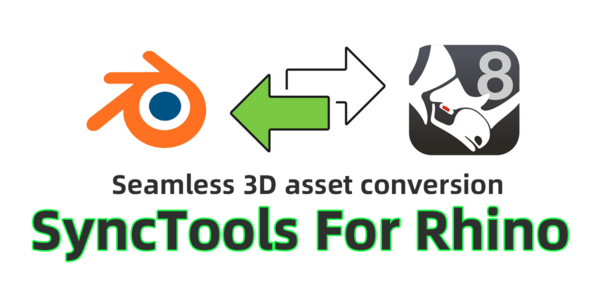
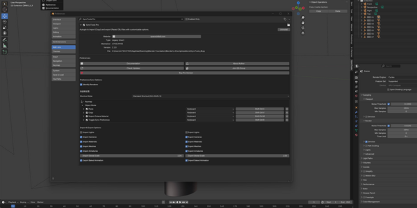
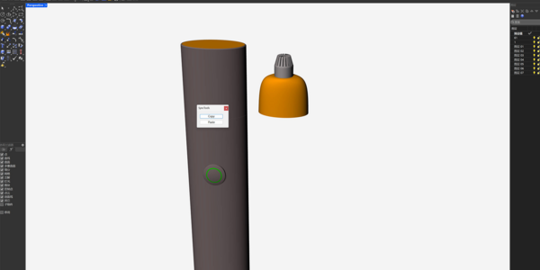
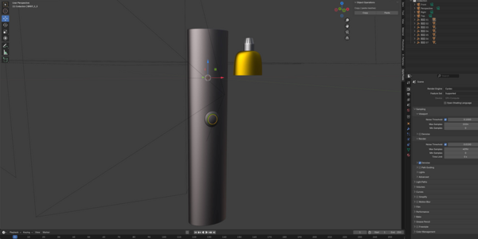
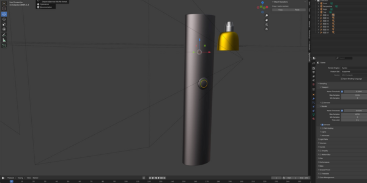
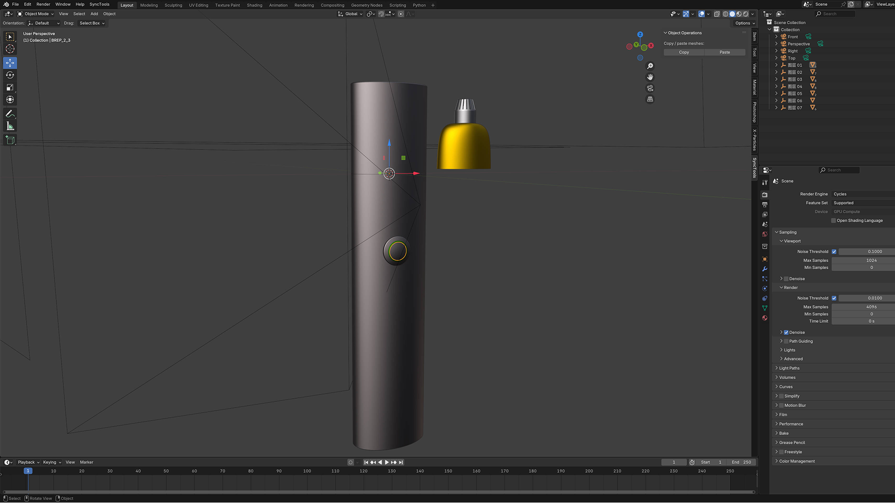
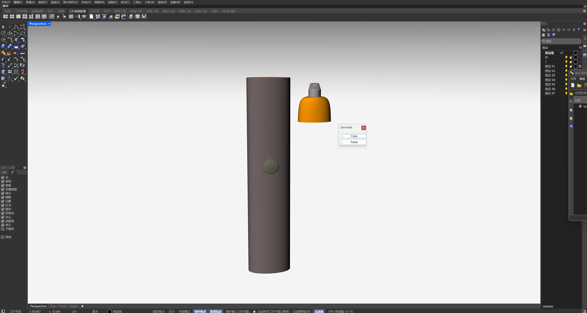

Here’以下是您的格式化版本:
SyncTools for Rhino 是一款专业级工具，旨在简化不同 Rhino 文档之间复制和粘贴 3D 对象的流程。只需一键，即可将选中的对象从一个场景传输到另一个场景，同时保持所有几何属性和层级关系。此工具可显著提升您的 Rhino 工作流程效率。
所有插件均采用统一的数据交换协议，实现跨平台无损资产转换和真正的多软件协同工作流程。


✔ NURBS 几何体
✔ 网格对象
✔ 变换层级
✔ 对象属性
✔ 图层结构
⚠ 材质和纹理
⚠ 自定义属性
⚠ 块定义
✖ 视口显示模式
✖ 分析对象
✖ 动态块
✖ 自定义插件数据
1️⃣ 单位系统: 兼容所有 Rhino 单位系统
2️⃣ Selection: 仅传输选中的对象
3️⃣ 缓存管理: 自动清理临时文件
4️⃣ 撤销支持: 与 Rhino 撤销系统完全集成
5️⃣ 跨版本: 不同 Rhino 版本之间兼容
SyncTools for Rhino 为 Rhino 文档之间的高效对象传输提供了专业解决方案。 其直观的界面和强大的功能使其成为建筑师、设计师和 3D 艺术家处理多个 Rhino 文件时的必备工具。
如需技术支持或有任何问题，请通过 Blender Market’的支持系统.